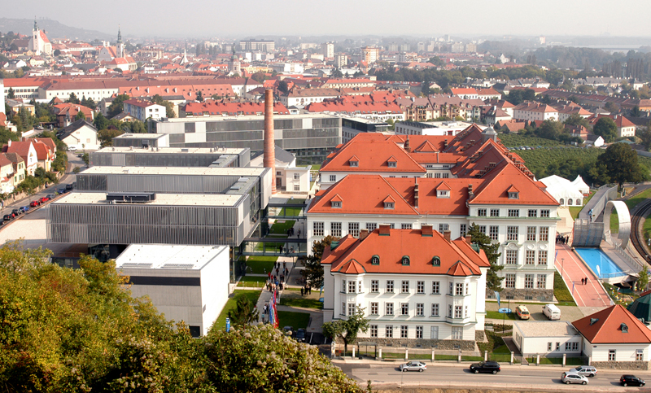

The Home of ResearchSpace
The Social Responsibility of Documentation: Contextualizing Data
Kartography Director, Dominic Oldman, provides the inaugral keynote for CIDOC 2023 - Mexico City (25th Sept)
 Conference link
Conference link
From Database to Knowledge base?
Kartography teaching at Getty Summer School (8th September) - Krems an der Donau
 Summer School Link


Who are Kartography?
Kartography are an interdisciplinary team drawing upon extensive experience of working within knowledge organisations including the Royal Academy of Arts, the British Museum and the National Gallery. Kartography expertise includes historical and social science methodology, computer science, knowledge systems, AI, semantic web, linked data and process analysis. The team also provide subject knowledge in history, archaeology, art history, conservation and conservation science, ethnography, anthropology. This allows Kartography, together with the ResearchSpace knowledge system developed by the team, to add significant benefits to knowledge processes and projects. The Kartography organisation is a Community Interest Company - a non-profit social enterprise. Click here to learn more.
Interdisciplinary - developers of ResearchSpace - extensive heritage experience - Semantic Web - AI - knowledge organisations - humanists
What is ResearchSpace?
ResearchSpace is a progressive alternative and successor to the database. It is a semantic knowledge base system designed to support dyanmic knowledge processes and create meaningful data more closely aligned with our thinking and reality. It can be used in research, within cultural heritage organisations and any other organisation for which dynamic knowledge building is an important part of its processes. ResearchSpace is an open source system with 10 years of research and development funded by the Mellon Foundation, New York and has significant overlaps with artificial intelligence but from a human curated perspective.
ResearchSpace has been designed to address many of the problems associated with representing complex data that databases are not designed to address. For more information about how ResearchSpace works click here
progressive - semantic data - dynamic data - knowledge base not database - Mellon Foundation
Why are databases problematic for knowledge processes?
Databases were not designed for complex semantic content. They were invented for the processing of commercial data used in supply chains. They had no need to include context because the scope of use built into their design was relatively narrow. The need to integrate with other organisations was not a priority at the time but as data integration became important for commercial processes databases created a problem even for the narrow types of data they processed. A huge amount of complexity is required to perform relatively simple integrations. Databases are essentially static and functional. Without semantics content is fixed and reductive. However, all sectors commercial, public and volunatry, now require holistic systems that can deal with dyanmic processes and more complex problems and real world relational data. An example is produced here.
databases - complexity - commercial - static - functional - reductive
How does ResearchSpace work?
In order for different system to effectively communicate their need a common understanding. When we communicate we use different words and phrases to describe similar things. When information is processed through computers this can cause a serious problem and overhead. Every organisation is individual and has different perspectives and traditions, but on the other hand their is a greater need to integrate internally and externally on an interdisciplinary basis. Knowledge system work, not by limiting different ways of describing world but by providing a framework that identifies key universal concepts with empirical references to reality. In this way the human operator and the computer have a precise framework for agreement. This framework is highly meaningful. Instead of a database that only stores a field label and a value with a data type, ResearchSpace stores a semantic network of processes typed to real world concepts. This creates a highly effective knowledge base of information which can be dynamically extended and exchanged.
language - reference to reality - integration - empirical framework - semantic network - dynamically extend
Why is ResearchSpace more effective than a database?
ResearchSpace solves some significant problems associated with databases, whether doing research or working in a skilled knowledge environment dependent on changing information. Databases have static models and no formal data semantics. They are designed to control a particular static set of information in quantity. However, knowledge is not a static concept. In both research and in many skilled jobs people are necessarily building knowledge far beyond these static models. As such they start using other mechanisms to record that additional knowledge which is more important to their work than that recorded by the database. This creates a significant overhead and an inefficiency invisible to the organisation.
Information becomes fragmented which prevents individuals and organisations from working in an effective and connected way, and building valuable knowledge which otherwise fades away. Peter Drucker the organisational consultant who coined the phrase knowledge society, said that: “If knowledge isn’t challenged to grow, it disappears fast.” This is highly costly to all organisations and projects.
not static but dyanmic - knowledge society - inefficiency of databases - preserving and using meaningful knowledge
How does kartography do?
Kartography helps you transition from the one dimensional database to a new digital environment in which a wider range of knowledge can be authored with greater context and diversity. It helps design systems that include parallel perspectives, argument and uncertainty, multi-layered causation (influence). This often goes hand in hand with reviewing and changing internal processes to represent greater collaboration within and across departments and with external partners and audiences.
Kartography are experienced at creating flexible knowledge systems that grow and evolve as human working elvoves without the overhead of a traditional custom system. All the meaning and logic is in the data making it easier to change the way ResearchSpace interacts and augments knowledge processes and work.
Kartography provides courses in how to change the way people work to make better use of the knowledge they produced. To radical change the relationship with information systems and to create data systems that eliminate bias and represent context that improves inclusivity. It also provides connected courses in the technicalities of the Semantic Web and Linked data wothout separating the technical processes from social context.
multi-dimensional - context - diversity - flexible - inclusive - embedded login and meaning